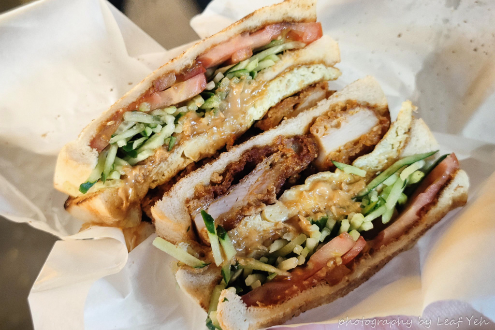
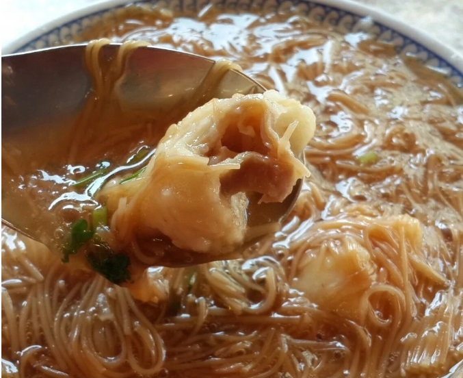
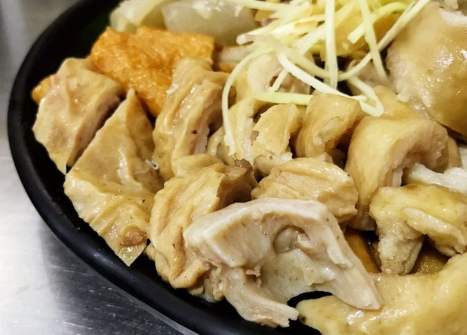
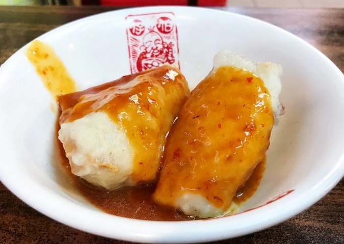

探索基隆美食
一場味蕾的冒險
FOOD


基隆，這座位於台灣北端的城市，不僅擁有悠久的歷史，還是一個充滿活力的文化交匯點。作為台灣的主要交通樞紐，基隆長久以來是東西方食材與烹飪技藝的交融地。無論是傳統的台灣小吃，還是來自世界各地的異國風味，基隆的美食總是充滿多元與驚喜。在這裡，海鮮、米飯、麵食等經典台灣菜肴經過當地獨特的處理方式，呈現出一種無與倫比的風味。每一道菜肴背後，都蘊含著基隆這座港口城市的歷史與故事。無論是繁華的夜市，還是隱匿在巷弄裡的小店，每一口食物都充滿了當地人民的熱情與創意，是對基隆深厚歷史的致敬。來到基隆，品味的不僅僅是美食，更是這座城市的歷史與人情味。
基隆崁仔頂碳烤三明治
三沙灣麵線羹
菊姐大腸圈
魚丸伯仔
基隆乾麵
基隆乾麵中一大部分歸類為廣東麵，而廣東麵究竟指的是一種麵食製程或單指麵條種類，尚未有定論，不過大抵的畫面是那竹製或鐵製面篩內，有著細扁的白乾麵條（重點），幾葉韭菜段、豆芽苗，滾沸待足時，起篩一抖做「切」，盛碗後，澆一匙豬油蔥酥、一匙特製醬油，上桌添兩片白切里肌肉（或紅糟肉）見客。滷肉飯
滷肉飯乃是台灣之國食，有所追求，簡單一碗可不簡單。 首先豬後腿肉為求口感，禁不起機絞也不得狡，手工切至皮、肥、瘦肉比例恰好的那一條，滷製色澤則端看店家派系，醬甜、鹹香色深色淺無一標準，可肥肉狀態要求呈晶凍狀，口感為室溫奶油最佳。米飯之選，能吸附滷汁之稍稍鬆散新陳米，帶Q勁嚼感為上乘。 小吃之份量應如點心般，見基隆廟口之淺瓷碗即可知，飯量約莫握拳大小，飄灑進碗中的滷汁，所求肉塊勻稱覆飯頂約莫七八，食畢應不見滷汁殘於碗底，若殘碗底，一是過多，二則是飄灑不均肉汁肅降碗底，飯粒發脹，食相粗糙難看。擱在碗緣的那一味-漬物，自識滷肉飯以來少見店家提供，至今也沒碰上喜歡的，但吃來平衡，能做到口腔換味、轉味之動作即可。 基隆滷肉飯之盛，若要一一列舉評比，想不必了。但售好的滷肉飯店家大致上有兩種類型，第一是如基隆廟口專售滷肉飯之店家，配菜湯品簡廉，品項至多三到四樣，來盤油光鋥亮的水煮高麗菜、同肉汁滷煮的鴨蛋、沾食辣椒醬油的筍片腿肉湯，重味者來盤蔥爆肉絲，都是令人魂牽夢縈的組合。石頭火鍋
石頭火鍋的獨特之處在於其以爆香熱炒為開端。在用餐前，食材會經過短暫的熱炒，這不僅能夠激發食材本身的香氣，更能讓香味充分溢出，令人食指大動。這種熱炒的過程，將食材的風味最大化，那一瞬間就是和美味近距離接觸的時候。咖哩肉餅
採用印度咖哩製作出細緻的餅皮搭上香醇的純綠豆餡包裹著嚴選黑毛豬肉，充分融合成半鹹半甜的完美組合，細緻鬆香口感讓自然香氣散發在口中。白湯豬腳
白湯豬腳的湯頭多用豬腳加大骨熬製，不但能強化膠質，更增添香醇風味，因此白湯豬腳的湯是用來牛飲的；醬油滷製的豬腳則例不喝湯，最多用來澆飯。燒賣
燒賣是一種傳統的中式點心，通常會依口味的不同，將豬肉混合蝦仁、魚籽、紅蘿蔔等食材，包裹於薄嫩的麵皮中。 而其外型精緻小巧，方便食用，無論作為正餐或點心都很適合，可是港式餐廳中非常受歡迎的美食。阿華炒麵
阿華炒麵這種咖哩跟我們常見的咖哩很不一樣，但基隆這邊的咖哩好像都是這種土黃色咖哩，上桌就可以聞到很濃的咖哩香氣，然後份量真的蠻大的，炒麵堆的尖尖的！咖哩炒麵的配料有蝦子、豬肝、洋蔥、吉古拉、肉片，配料相當豐富，咖哩醬汁感也是很濃稠的那種，麵條均勻的包裹醬汁，看起來就很夠味！大餛飩
餛飩是一種以薄麵皮包餡的麵粉製品，但不同於餃子。 古代華夏人認為這是一種密封的包，稱為渾沌，依據漢字造字的規則，後來才稱為餛飩。在南北朝到唐代，餛飩或主流稱為渾沌餅，且形如偃月，更接近於今天的水餃。三兄弟豆花
豆花，中國北方稱為豆腐腦，是由黃豆漿絮凝後形成的口感近似於果凍或布丁狀食品統稱，質地比豆腐嫩軟，是一種常見小吃、甜點。